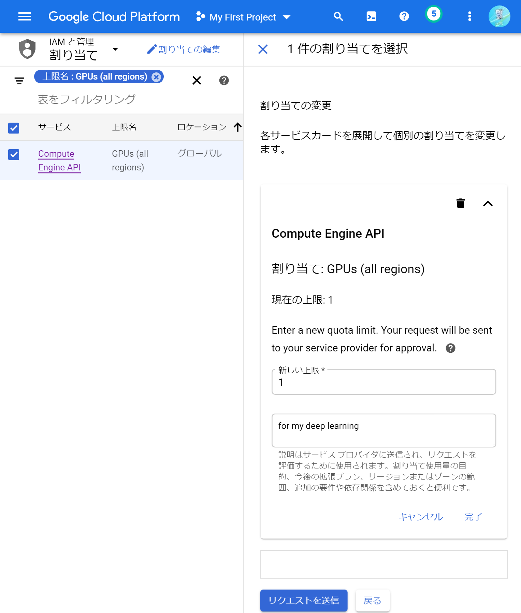
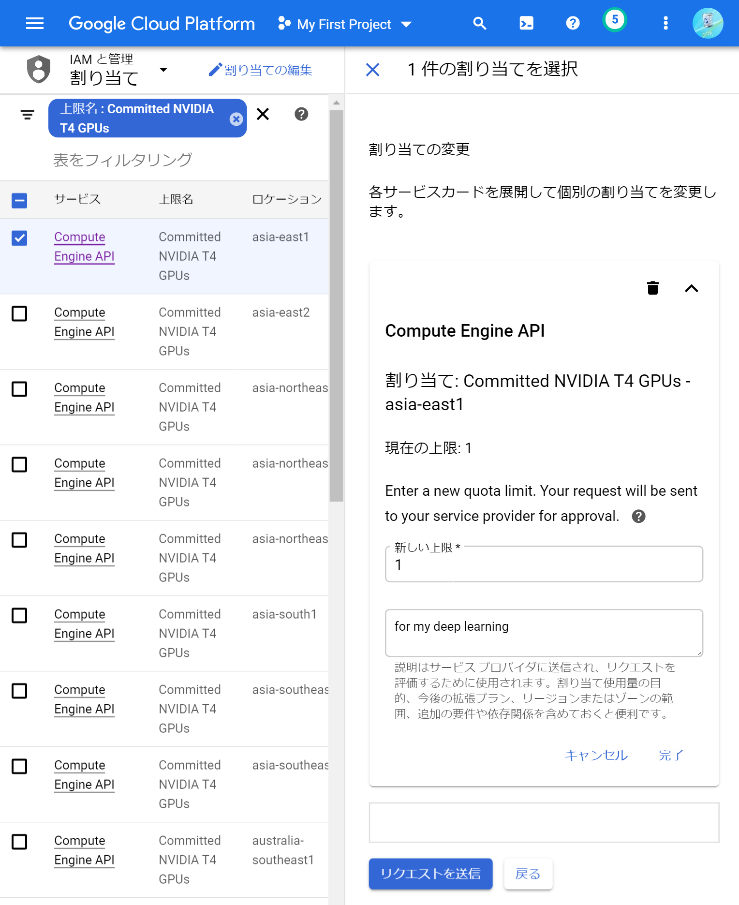
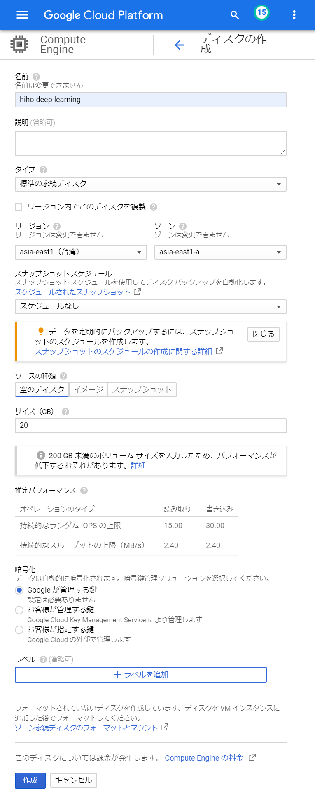
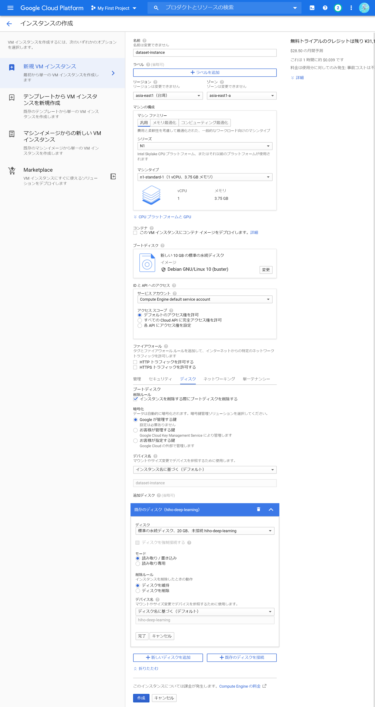
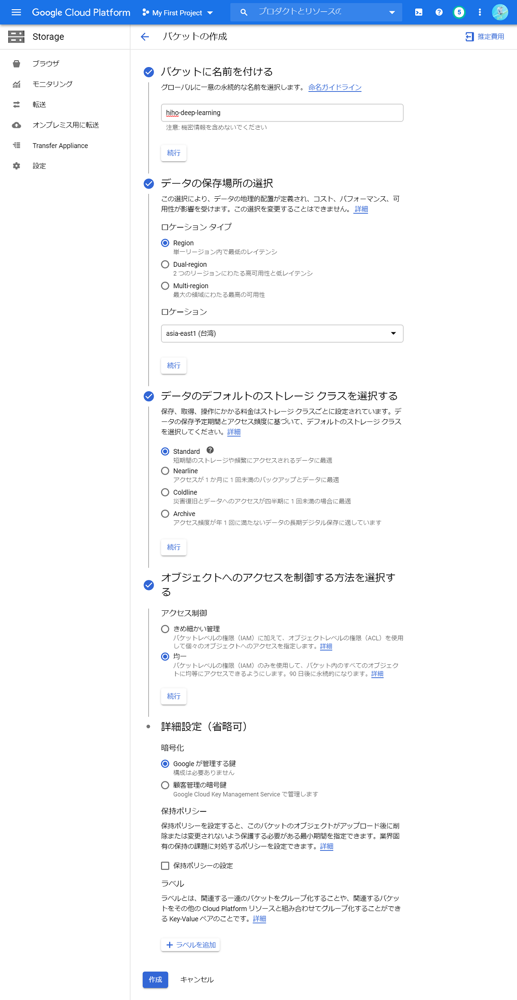
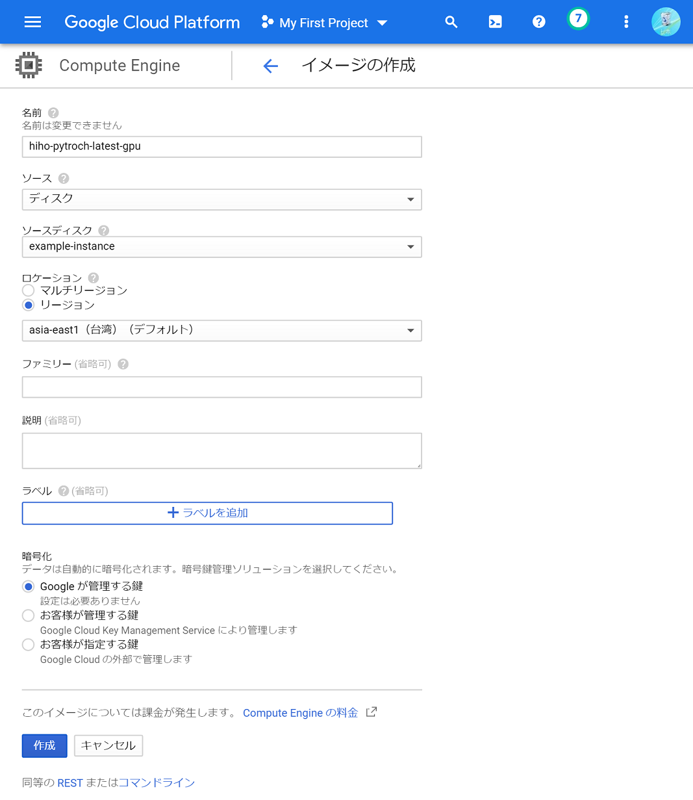
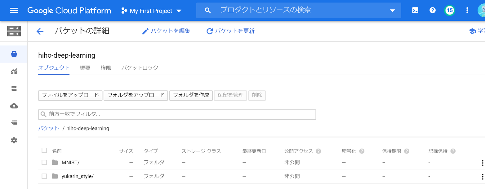
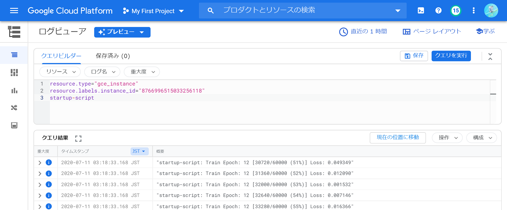

私は仕事でも趣味でもディープラーニングをしています。趣味ではいつもGoogle Colaboratoryを使ってお金をかけずにディープラーニングしていたのですが、Colabは1日12時間ほどしかGPUを使えず、しかも頻繁に学習タスクを回していると弱いGPUしか利用できなくなるので、進捗があまりよくありませんでした。そこで、お金を使って進捗を出すことを考えました。
Google Cloud Platform（GCP）なら、ちょっと弱めのGPU（Tesla T4）を1時間あたり約12円で借りられます。これならまあ趣味の予算で可能だと感じたので実際にやってみたのですが、GCPは思った以上に複雑で、わかりづらい点が多くありました。そこでこのブログでは、GCPに登録するところから、１コマンドでディープラーニングできる環境を構築するまでの方法を紹介します。
手順
Google Cloud Platform（GCP）でディープラーニングするためには、GCPに登録したり、ストレージを用意したりする必要があります。このブログでは、次の項目に沿って手順を紹介します。
- 準備する（GCPに登録、gcloudをインストール、GCPの設定）
- データセット・学習結果用のストレージを用意する
- 学習用のVMイメージを作成する
- 自動で学習・停止するスクリプトを書く
- VMインスタンスを起動してディープラーニングする
- 学習結果を回収する
ちなみに、VMとは仮想マシンのことで、GCPでは「Google Compute Engine」と呼ばれています。
準備する（GCPに登録、gcloudをインストール、GCPの設定）
GCPを利用するにはアカウントの登録が必要です。GCPのページから登録することができます。また、GCPでGPUを使うには、アカウント登録の他に、支払い方法の登録が必要です。支払い方法はGCPコンソールのお支払いで登録することができます。支払い方法の登録に関する詳細は、Cloud Billingのガイドで確認できます。ちなみに、GCPには300ドルの無料クレジットがあります。
手元のパソコンからコマンドでGCPにアクセスするには、gcloudツールがとても便利です。このブログの説明ではgcloudを使う方法を主に紹介しています。gcloudのクイックスタートに、OS別のインストール方法が紹介されています。
gcloudの設定中に、デフォルトの「リージョン・ゾーン」の入力を求められます。リージョンとはデータセンターの場所で、ゾーンはその中で更に区分けされた場所のことです。場所の決め方は、GPUの料金ページを見て、日本から近くて安い場所にすると良いと思います。また、同じリージョン内でも、ゾーンによって使用可能なGPUの種類が異なる場合があります。リージョン・ゾーンごとの使用可能なGPUの種類は、GPUの詳細ページに掲載されています。私は安いGPU（Tesla T4）が使えると嬉しいので、台湾（asia-east1）にしました。
GCPでGPUを用いるには、GPUの「割り当て」を申請する必要があります。割り当ては、GCPコンソールの割り当てページから申請できます。GPUを用いるためには、2つの割り当て項目を申請する必要があります。1つ目は、GPUの合計数です。割り当てページの「フィルタ」に「gpu」と入力して出てくる「GPUs(all regions)」を選択し、「割り当ての編集」ボタンを押します。右側に「連絡先の詳細」入力欄が出てくるので、「名前」「メールアドレス」「電話番号」をそれぞれ入力して次へ進みます。次は「割り当ての変更」入力欄が出てくるので、「新しい上限」に使いたいGPUの数を書いて、「リクエストの説明」に使用目的を書き、「リクエストを送信」ボタンを押します。申請後、しばらくすると申請が通ったことを伝えるメールが来ます。このときのページ画面はこんな感じです。 
割り当て項目の2つ目は、GPUの種類ごとの数です。先程と同様に割り当てページの「フィルタ」に「gpu」と入力し、好きなGPU（例えばT4の場合は「Commited NVIDIA T4 GPUs」）を選択します。種類ごとのGPUの割り当て申請はリージョンごとに区分されているので、いろんなリージョンの項目が表示されます。その中から、gcloudで設定したリージョンと同じ項目を選択して、「割り当ての編集」ボタンを押します。あとは先程と同様に入力して、割り当てを申請します。このときのページ画面はこんな感じです。
データセット・学習結果用のストレージを用意する
データを保存するストレージは、「永続ディスク」と「Cloud Storage」の2種類を目的に分けて使います。永続ディスクはデータ転送速度が早い一方、複数のVMインスタンスから同時に書き込みできないという仕様があります（※正確には、複数のVMインスタンスに書き込み権限付きでマウントすることができません）。逆にCloud Storageは複数のVMインスタンスから同時に書き込めますが、データ転送速度が遅いです。これらの理由から、学習データセットは永続ディスクに、学習結果はCloud Storageに保存することにします。
永続ディスクは、GCPコンソールの「ディスク」から作成することができます。ディスクページにある「ディスクを作成」ボタンを押すと、ディスク作成のための入力欄が表示されます。入力欄の「名前」に好きな名前を書き、「リージョン」や「ゾーン」にはgcloudで設定したものを選びます。「タイプ」や「サイズ」は料金ページを参考に予算と相談して、SSDもしくはHDD（標準ディスク）から選びます。それ以外はデフォルトのままにして、作成ボタンを押します。このときのページ画面はこんな感じです。
永続ディスクが作成できたら、データセットを保存しておきます。永続ディスクにデータを転送するには、VMインスタンスを立ち上げて永続ディスクをマウントし、gcloudコマンドを用いてコピーするのが手っ取り早いです。データセットをコピーするために、まずは作業用の安いVMインスタンスを起動します。GCPコンソールの「VMインスタンス」ページを開き、「インスタンスを作成」ボタンを押すと、VMインスタンス作成のための入力欄が表示されます。「名前」に好きな名前を書いて、「リージョン」と「ゾーン」にはgcloudで設定したものを選択します。また、「管理、セキュリティ、ディスク、ネットワーク、単一テナンシー」を展開し、「ディスク」タブで「既存のディスクを接続」から、先ほど作成した永続ディスクを選びます。それ以外はデフォルトのままにして、作成ボタンを押します。このときのページ画面はこんな感じです。
VMインスタンスが起動したら、gcloud compute sshでVMインスタンスにssh接続したあと、永続ディスクをマウントします。
# ssh接続
gcloud compute ssh [VMインスタンスの名前]# 永続ディスクをマウント
mkdir -p [永続ディスクの名前]
sudo mount -o discard,defaults /dev/sdb [永続ディスクの名前] マウントが完了したら、手元のパソコンからgcloud compute scpでデータセットを転送することができます。転送後、VMインスタンス内でls [永続ディスクの名前]することで、ファイルが転送できたことを確認できます。
gcloud compute scp --recurse [データセットのパス] [VMインスタンスの名前]:[永続ディスクの名前] 続いて、Cloud Storageで、学習結果を保存するためのストレージ（バケット）を作成します。バケットは、GCPコンソールの「ストレージ ブラウザ」から作成できます。「バケットを作成」を押すと、バケット作成のための入力欄が表示されます。入力欄の「バケットに名前を付ける」に好きな名前を書き、「ロケーションタイプ」を「Region」にして、「ロケーション」にgcloudで設定したリージョンを入力します。あとは「アクセス制御」を「均一」に設定し、それ以外はデフォルトのままにして、作成ボタンを押します。このときのページ画面はこんな感じです。
以上でストレージの準備は完了です。
学習用のVMイメージを作成する
GCPにはデフォルトで、PyTorchやTensorFlowがインストールされたVMイメージ（Deep Learning VM）があります。しかしこれらのVMイメージには、NVIDIAドライバなどがインストールされていません。既成のVMイメージにNVIDIAドライバなどをインストールして自分用のVMイメージを作成しておくと、VMイメージの使い回しができて便利です。
まず最初に、元となるVMイメージを使ってVMインスタンスを起動します。GCPには色々なVMイメージがあり、PyTorchなどのフレームワークがインストール済みのものや、CUDAだけ入っているものなどが用意されています。私はPyTorchを使いたいので、「pytorch-latest-gpu」を選びました。より細かいバージョンを指定したい場合はgcloud compute images listを実行することで確認できます。
選んだVMイメージを指定して、gcloud compute instances createでVMインスタンスを起動します。--image-familyに選んだVMイメージを指定し、--acceleratorには先ほど割り当てを申請したGPUを指定します。ここで指定するGPUのラベル名は、GPUの対応表で確認することができます。--metadata="install-nvidia-driver=True"を指定することで、NVIDIAドライバが自動的にインストールされます。
gcloud compute instances create [VMインスタンスの名前] \
--image-project="deeplearning-platform-release" \
--image-family="pytorch-latest-gpu" \
--metadata="install-nvidia-driver=True" \
--accelerator="type=nvidia-tesla-t4,count=1" \
--maintenance-policy="TERMINATE" ちなみに--maintenance-policy="TERMINATE"は、GPUを使用してVMインスタンスを起動する際に必ず指定する必要があります。引数の詳細はこちらに紹介されています。
NVIDIAドライバがインストールできたので、このVMインスタンスを再利用することで素早くディープラーニングすることが可能です。が、いつもインストールする他のツールもここでインストールしておくと、VMインスタンスの起動時間を更に減らすことができます。デバッグをしやすくするためのログ出力ツールと、Cloud StorageバケットをマウントするためのFUSEツールも、ここでインストールしておきます。
まず、gcloud compute sshでVMインスタンスにssh接続します。
# ssh接続
gcloud compute ssh [VMインスタンスの名前]ssh接続したあと、次のコマンドを実行してツールをインストールします。
# ログ出力ツールのインストール
curl -sS https://dl.google.com/cloudagents/install-logging-agent.sh | sudo bash -# FUSEのインストール
export GCSFUSE_REPO=gcsfuse-`lsb_release -c -s`
echo "deb http://packages.cloud.google.com/apt $GCSFUSE_REPO main" |\
sudo tee /etc/apt/sources.list.d/gcsfuse.list
curl https://packages.cloud.google.com/apt/doc/apt-key.gpg | sudo apt-key add -
sudo apt-get update
sudo apt-get install -y gcsfuse他にも、ディープラーニングフレームワークのアップデートなど、時間がかかる環境構築作業もここで行うと良いと思います。全てのインストールが完了したら、VMインスタンスを終了しておきます。
sudo shutdown now 最後に、色々インストールしたVMインスタンスを元にVMイメージを作成して、再利用できるようにします。VMイメージの作成は、GCPコンソールの「イメージ」で行えます。「イメージを作成」ボタンを押すと入力欄を表示されるので、「名前」に好きな名前を書き、「ソース」を「ディスク」に選択したあと、「ソースディスク」に先程のVMインスタンスの名前を選択します。あとは「ロケーション」を「リージョン」にして、gcloudで設定したリージョンを選択します。それ以外はデフォルトのままにして、作成ボタンを押します。このときのページ画面はこんな感じです。
以上で学習用のVMイメージの作成は完了です。
自動で学習・停止するスクリプトを書く
全ての準備が完了したので、VMインスタンスを起動してディープラーニングを実行します。起動時間をできるだけ短くするために、起動直後に自動的に学習を開始し、学習が完了したら自動的に停止するようにします。
起動直後に学習を開始するためには、VMインスタンスの「起動スクリプト」を使うのが手っ取り早いです。起動直後に実行するスクリプトを書いておき、gcloudでVMインスタンスを起動するときの引数に指定します。以降で、起動スクリプトの内容（自動停止の設定、ディスクのマウント、訓練開始コードなど）を紹介します。
まず1行目に、エラー発生時にこのスクリプトの実行を終了させる設定を書きます。
set -eu起動スクリプトはrootユーザーで実行されます。rootユーザーではPythonへのパスが通っていないので、パスを追加します。
export PATH="/usr/local/cuda/bin:/opt/conda/bin:/opt/conda/condabin:$PATH"続いて、VMインスタンスが自動的に終了するようにします。
trap finally EXIT
function finally {
shutdown
}Cloud Storageバケットをマウントして、学習結果を保存できるようにします。この例の場合、/mnt/resultディレクトリに学習結果を保存すると、自動的にバケットに保存されます。
mkdir -p /mnt/result
gcsfuse [バケットの名前] /mnt/result永続ディスクをマウントして、データセットを読み込めるようにします。この例の場合、/mnt/datasetディレクトリからデータセットを読み込むことができます。
mkdir -p /mnt/dataset/
mount -o discard,defaults /dev/sdb /mnt/dataset/最後に、訓練用のコードをダウンロードして実行するようにします。この例では、GithubからPyTorchのMNIST分類サンプルコードをダウンロードして実行しています。他にも、Cloud Storageバケットや永続ディスクに訓練コードを保存しておいて、起動スクリプトから実行する方法もあると思います。
# ダウンロード
curl https://raw.githubusercontent.com/pytorch/examples/master/mnist/main.py > train.py
# 実行
python train.py --batch-size 64 --save-model
# 学習結果を保存
cp * /mnt/result/これらのコードをまとめて[スクリプト名].shに保存します。
VMインスタンスを起動してディープラーニングする
ストレージ・VMイメージ・スクリプトの準備ができたので、これらをVMインスタンスの起動コマンドの引数に指定して、ディープラーニングを実行します。--diskでデータセット用の永続ディスクの名前を、--imageで作成したVMイメージの名前を、--metadata-from-file="startup-script="でスクリプト名を指定します。他にも、--machine-typeにマシンタイプを指定することで、CPUやメモリ量を変更できます。
gcloud compute instances create [VMインスタンスの名前] \
--disk="name=[永続ディスクの名前],auto-delete=no,mode=ro" \
--image="[VMイメージの名前]" \
--metadata-from-file="startup-script=[スクリプト名].sh" \
--machine-type="n1-standard-2" \
--accelerator="type=nvidia-tesla-t4,count=1" \
--maintenance-policy="TERMINATE" \
--scopes="default,storage-full" \
--preemptible \
--no-restart-on-failure \
--no-shielded-integrity-monitoring \ 紹介していないけど必要な引数も追加しています。--scopes="default,storage-full"でCloud Storageバケットへのフルアクセス権限を付与しています。--preemptibleでプリエンプティブルインスタンス（有効期間が短い代わりに料金が手頃なVMインスタンス）を利用するようにします。--no-restart-on-failureは自動再起動の抑止を、--no-shielded-integrity-monitoringは整合性モニタリングの無効を指定しています。
VMインスタンス起動後、正常に学習できていると、学習結果がCloud Storageのバケットにこんな感じで保存されているはずです。
学習結果のダウンロードは、GCPコンソールのバケットから1つずつファイルをダウンロードする方法と、gsutilを用いてディレクトリごとダウンロードする方法があります。gsutilはGCPのリファレンスに、インストール方法が書かれています。gsutilを使えば、次のようなコマンドでMNISTディレクトリをダウンロードすることができます。
gsutil -m cp -r "gs://[バケットの名前]/MNIST" ~/Downloads/以上で、GCPを使ってディープラーニングする手順の紹介は終わりです。
実践
実際にGCPでディープラーニングしてみて、気になったことや、知っていると役立つかもしれないテクニックを少し紹介します。
コスト
実際のタスクに適用してみたときのコストを計算してみます。StarGAN v2を追実装し、StarGAN v2を音声ドメインへ適用する実験をGCPで行ってみました。GCPのリージョンは台湾を選びました。マシンタイプはn1-standard-2（vCPU２つ、メモリ7.5GB）で、プリエンプティブルだと1時間あたり0.022ドルでした。GPUはNVIDIA Tesla T41つ（GPUメモリ16GB）で、プリエンプティブルだと1時間あたり0.11ドルでした。StarGAN v2の学習は、プリエンプティブルインスタンスの最大時間の24時間でほぼ完了したので、実験1回で3.168ドル≒339円でした。ストレージなどの費用はこれらに比べると微々たるものでした。それ以外で費用は発生しませんでした。
過去の経験から、生成系のディープラーニングの追実験は、20回ほど学習を試せば、目的の品質が得られそうかわかる気がします。1日かかる学習を20回行っても339円*20回=6780円です。ゲーム1本くらいだと思えば、まあ趣味の範囲内かな、という感触でした。
ログの表示
ログはすべてGCPコンソールの「ログビューア」で見ることができます。VMインスタンス一覧から「ログを表示」を選択して、そのインスタンスのログだけを見ることもできます。24時間経たずにVMインスタンスが終了している場合は、ログの一番最後を見ると終了した理由がわかります。例えばプリエンプトされて早期終了した場合は、最後に「preempted event」が表示されていました。
ログはプログレスの表示なども含めて全て記録されていることもあり、ちょっと見づらいです。クエリビルダーに「startup-script」を追記すると、起動スクリプトからのログだけを表示できます。 
プリエンプト対応
プリエンプティブルインスタンスを使う場合、最大時間の24時間までに早期終了する（プリエンプトされる）ことがあります。学習プロセスが異常終了すると学習結果がおかしくなる可能性があるので、プリエンプトを検知したら学習を停止させるようにしました。VMインスタンスがプリエンプトされる対象になったことを検知する方法はいくつかありますが、VMインスタンス内でプリエンプトされたかどうかを確認するAPIをロングポーリングする方法が便利でした。例えば以下のように書くことで、プリエンプトを検知した際に、ディープラーニングのプロセスに停止シグナルを送信することができます。
python train.py & # ディープラーニングをバックグラウンドプロセスとして起動
pid_train="$!" # プロセスIDを取得
api="http://metadata.google.internal/computeMetadata/v1/instance/preempted?wait_for_change=true"
curl -sS $api -H "Metadata-Flavor: Google" & # プリエンプトを検知するプロセス
pid_preempted="$!" # プロセスIDを取得
wait -n # バックグラウンドプレセスのいずれかが完了するまで待機
kill -SIGINT $pid_train # ディープラーニングのプロセスに停止シグナルを送信学習パラメータの渡し方
ディープラーニングする際、複数のパラメータを与えて複数の学習を同時に行いたいことがあります。GCPで別々の学習パラメータを与える方法を色々調べたところ、起動スクリプトを複製して書き換えるのが手っ取り早そうでした。例えば先ほどのMNIST分類で、バッチサイズを変えて複数のVMインスタンスを起動したいときは、次のようにsedコマンドを使うことによって簡単に実現することができます。
# 起動スクリプトを修正
python train.py --batch-size BATCHSIZE --save-model# VMインスタンス起動コマンドを修正
for batchsize in 16 32 64; do # バッチサイズ16, 32, 64
cat [スクリプト名].sh | sed "s/BATCHSIZE/$batchsize/g" > tmp_script.sh # 起動スクリプトを複製
gcloud compute instances create [VMインスタンスの名前] \
--metadata-from-file="startup-script=tmp_script.sh" \
（省略）
done終わりに
Google Colabの制限に疲れていたとき、GCPのプリエンプティブルインスタンスであれば割とお手頃価格でクラウドディープラーニングができることを知り、実際に試してみました。設定は大変でしたが、それなりに使える環境がそれなりの価格で整備できました。もっとお金があったら次はGoogle Kubernetes Engineとか使って、もっとかっこいい仕組みを作ってみたいです。ちなみにStarGAN v2の音声適用ですが、全然ダメでした。ディープラーニングむずかしい。
記事に関して何かありましたら、ツイッターの@hiho_karutaまでご連絡いただけると嬉しいです。
最後に。GCP試行錯誤やブログ執筆は、ずっとニコ生で放送しながら行っていました。助言をくださった方々や、進捗を見守ってくださった方々、ありがとうございました。